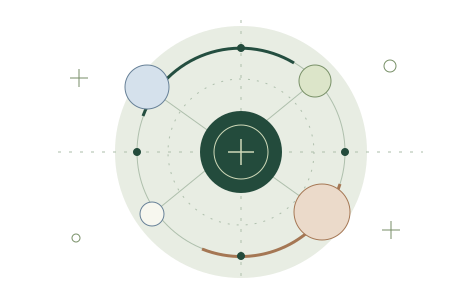

Publications · 2018–2026
Publications.
Journal articles and reviews are grouped by first publication year. DOI links lead to the publisher record; books, chapters, teaching cases, reports, and public scholarship follow the journal list.

2026
-
Corporate Social Responsibility and Environmental Management
Assessing ESG Agency Ratings in Hospitality: A Triangulated Perspective
-
International Journal of Contemporary Hospitality Management · 38(6), 1927–1952
Examining the impact of greenwashing and greenhushing on consumer trust and behavior in the restaurant industry
-
Journal of Hospitality and Tourism Insights · 1–21
Unlocking loyalty: How digital ease of use shapes memorable experiences and satisfaction for older adults in hospitality
USF research story -
International Journal of Hospitality Management · 137, 104696
Enhancing human-robot interaction in restaurants: The impact of anthropomorphic features on perceived attractiveness
-
Journal of Hospitality and Tourism Insights · 1–19
From solo trips to group travel: how fear and perceived threats shaped travel intentions
-
Journal of Hospitality and Tourism Technology · 1–21
Investigating customer service and engagement levels in the lodging industry: high-touch to high-tech conversational AI
USF research story
2025
-
Journal of Culinary Science & Technology · 1–28
From Buffets to Takeout: Student Perspectives on Public Health Crisis-Induced University Dining Transformations
-
Journal of Quality Assurance in Hospitality & Tourism · 1–15
Optimizing Hotel Profitability: How Cost System Sophistication Drives Financial Performance in the Hotel Industry
-
International Journal of Contemporary Hospitality Management · 37(9), 3042–3060
Redefining the servicescape in hospitality through technology and artificial intelligence: a conceptual framework
-
International Journal of Contemporary Hospitality Management · 37(7), 2389–2407
Retaining millennial talent: the role of servant leadership and creativity
-
International Journal of Contemporary Hospitality Management · 37(6), 2094–2113
Hotel App Quality (HAPQUAL): conceptualization and scale development
-
Journal of Marketing Theory and Practice · 34(3), 559–576
Understanding consumer frustration: analyzing airline revenge, boycott, and avoidance behaviors through PLS-SEM and ANN methods
-
International Journal of Hospitality Management · 126, 104100
Transforming spaces, shaping choices: The impact of room aesthetics on guest booking preferences
2024
-
Corporate Social Responsibility and Environmental Management · 32(2), 1767–1778
Exploring food delivery app adoption: Corporate social responsibility and perceived product risk’s influence
-
Journal of Hospitality and Tourism Technology · 16(3), 429–449
Perceptions and challenges of blockchain adoption in tourism industry: a study on trust, privacy and security
-
Spanish Journal of Marketing—ESIC · 29(1), 114–135
Social media marketing and brand loyalty: exploring interrelationships through symmetrical and asymmetrical modeling
-
Worldwide Hospitality and Tourism Themes · 16(2), 248–251
Revolutionizing getaways: automation and artificial intelligence’s transformative journey in tourism and hospitality
-
Young Consumers · 25(6), 748–770
Something to chew on: assessing what students want from campus dining services
-
International Journal of Hospitality Management · 119, 103692
Enhancing the hospitality experience: A systematic review of 22 years of physical environment research
2023
-
Journal of Cleaner Production · 416, 137948
The adoption of environmental practices in craft breweries: The role of owner-managers’ consumption values, motivation, and perceived business challenges
-
Cornell Hospitality Quarterly · 64(4), 436–453
Translating Transformational Leadership and Organizational Innovativeness Into Creative Customer Behavior: Underlying Processes and Boundary Conditions
-
International Journal of Hospitality Management · 113, 103520
The biophilic hotel lobby: Consumer emotions, peace of mind, willingness to pay, and health-consciousness
-
Journal of Hospitality & Tourism Education · 37(1), 1–14
An Assessment of American Hospitality Programs Based on RateMyProfessor: A Big Data Approach
2022
-
International Journal of Hospitality & Tourism Administration · 25(3), 638–664
Does Perceived Control Matter in the Early Days of COVID-19 in USA? A Protection Motivation Approach Examining Hospitality and Tourism Service Patronage
-
Journal of Global Hospitality and Tourism · 1(2), 110–127
COVID-19 and hospitality services: The role of information sources, believability, fear, and behavioral intentions
-
Journal of Hospitality and Tourism Management · 52, 264–274
The effect of biophilic design on customer’s subjective well-being in the hotel lobbies
-
Advances in Hospitality and Tourism Research · 10(4), 646–670
A Meta-Analysis of the Antecedents and Consequences of Delight in Tourism and Hospitality Research
2021
-
HERD: Health Environments Research & Design Journal · 14(3), 274–287
Small Garden, Big Impact: Emotional and Behavioral Responses of Visitors to a Rooftop Atrium in a Major Hospital
2020
-
Journal of Hospitality Financial Management · 28(2), article 3
Impact of Employee Meals on Employee Satisfaction and Hotel Financial Performance: An Experimental Study
-
Cornell Hospitality Quarterly · 62(1), 105–120
Response Rates in Hospitality Research: An Overview of Current Practice and Suggestions for Future Research
-
International Journal of Hospitality Management · 89, 102530
The effect of hotel lobby design on booking intentions: An intergenerational examination
Books, chapters & teaching cases
Books, chapters & teaching cases.
-
2024 · Book
Tourism: Concepts and Practices, 3rd ed.
John R. Walker; Christopher John M. Walker; Luana Nanu · Kendall Hunt
-
2024 · Instructor’s manual
Online Instructor’s Manual to Accompany Introduction to Hospitality, 9th ed.
John R. Walker; Luana Nanu · Pearson
-
2022 · Book chapter
Embedded Questions in Online Survey Email Invitations: The
Impact on Response Rate and Quality
Cihan Çobanoğlu; Luana Nanu; Olena Ciftci; Katerina Berezina; Muhittin Çavuşoğlu; Faizan Ali · Contemporary Research Methods in Hospitality and Tourism, 77–94
-
2022 · Teaching case
Outsourcing Hotel Kitchen Labor During Turbulent Times
Luana Nanu; Tianjian Liu; Alexandra Howard
-
2020 · Book chapter
Consumer Behavior, Internet, and Emerging Technologies
Cihan Çobanoğlu; Luana Nanu; Faizan Ali · Advances in Hospitality and Tourism Information Technology
-
2020 · Teaching case
Look Before You Leap: The Case of the Missing Elevator Floor
Keith Barron; Luana Nanu; Cihan Çobanoğlu
-
2018 · Book chapter
AirAsia and AirAsia X: A Case Study
Luana Nanu; Michael Russen; Frederick DeMicco · Strategic Management for Hospitality & Travel
Reports & public scholarship
Reports & public scholarship.
-
2021 · Report
U.S. Faculty Salary & Satisfaction Report
Cihan Çobanoğlu; Khuraman Shahtakhtinskaya; Luana Nanu; Faizan Ali; Trishna G. Mistry; Anudari Munkhtuya
-
2021 · Public scholarship
Yes, customers do like it when waiters and hairdressers wear
a mask—especially if it’s black
Cihan Çobanoğlu; Faizan Ali; Luana Nanu; Khuraman Shahtakhtinskaya